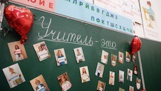

01
Образование и наука · событие дня
За веру в каждого ученика и поддержку ребят в трудную для них минуту
Вы учите всегда идти вперёд, думать, задавать вопросы и вместе искать на них ответы. Дорогие педагоги, спасибо за то, что вы всегда рядом. Друзья, сегодня хороший день, чтобы поздравить лично, позвонить или написать своему любимому учителю! С праздником!…